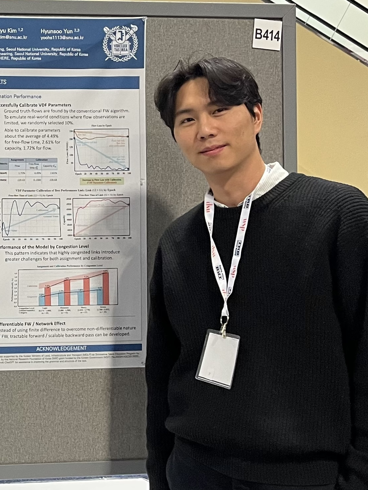

I will be attending IEEE ITSC in Naples, Italy. If you will be there too, I would be glad to connect and chat!
I am a Postdoctoral Researcher in the Digital Twin Lab at Purdue University, working with Prof. Ziran Wang. I earned my Ph.D. at Seoul National University, advised by Prof. Dong-Kyu Kim.
My research lies at the intersection of machine learning and transportation systems, spanning network modeling, travel demand modeling, and causal discovery.
I'm always happy to talk about related work or potential collaborations, so feel free to reach out.

I will be attending IEEE ITSC in Naples, Italy. If you will be there too, I would be glad to connect and chat!
Joined the Digital Twin Lab at Purdue University as a postdoctoral research associate.
Four papers accepted to the TRB Annual Meeting. See you in D.C.!
Excited to join the BK Education & Research Program for InfraSPHERE at Seoul National University.
I’m delighted to be joining Ajou University as a lecturer for the 2025 academic year!
Successfully defended my doctoral dissertation!
Completed a three-week Basic Military Training course for the Republic of Korea Army.
Honored to be selected for the Brain Korea 21 Future Innovative Talent Scholarship.